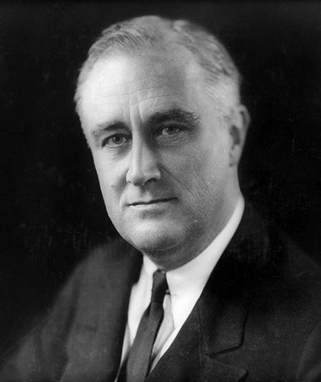

14) Savaşlar-Arası Dönem (I) Amerika Kendi Yoluna Gidiyor
“Yoksulluk bu ulusu terk ettiğinde, Tanrı’nın
yardımıyla çok geçmeden güneşli günlere ereceğiz.”
Herbert Hoover, Kara Perşembeden bir yıl önce
avaşlar arasındaki yıllar, Amerika için yeni bir çağın başlangıcıydı. Bu dönem iki farklı yarıma ayrılabilir: Bolluk yılları (1918-1929) ve yokluk yılları (1929-1939).
“Çalkantılı Yirmiler” sırasında, dünyanın diğer kısımlarında olduğundan farklı olarak Amerika genel bir refah döneminden geçiyordu. Bu dönem, “Amerikancılık” kavramının, kültürün bir ifadesi olarak yeni ve heyecan verici coşkun on yıldı. Gelir dağılımı eşit olmasa da, daha çok insan daha fazla imal edilmiş mal alabiliyordu. Daha çok insan, bir süre eskisiden daha iyi yaşam standardına sahip oldu. Tüketim patlaması, şehirlerin geniş alanlara yayıldığı bir ülkede artık lüks, sayısız miktarda araba satışlarından anlaşılıyordu. Amerikan işçi sınıfı, orta ve zengin sınıflar için bir ayrıcalık olan seyahat özgürlüğüne kavuştu.
Yeni elektrikli sanayi Yirmilerin refahının başka bir sembolü ve teşvik unsuruydu. Radyolar en çok talep gören aletlerdi. Radyonun dinleyici kitlesinin artmasıyla, özellikle gençlere hitap eden film endüstrisi, Avrupa’dan gelen yeni göç dalgasını Amerikan kalıbı içerisine soktu. Yirmilerin sonuna kadar Amerika’nın refahı kendi içerisinde toplumsal bir olguydu.
Siyasi cephede de Amerika kendi yolunda gitmekteydi. 1923’den 1928’e kadar Cumhurbaşkanlığı yapan Cumhuriyetçi Calvin Coolidge, laissez-faire’le (bir çeşit serbest pazar ekonomisi sistemi) Avrupa’nın yönetimini elinde bulunduran eylemcilerle tamamen ters özelliklere sahipti. Coolidge, tamamen zorunluluktan ötürü belirlenemeyen bütün idari etkinliğin istenmeyen sonuçlar doğurmasının muhtemel olduğuna inandı. İnsan memnuniyetini arttırabilmek için hükümetin faaliyet alanını sınırlandırmayı ve –ne yazık ki eşitsizliklere neden olan– bireysel girişimi teşvik etmeyi amaçladı:
Hükümet çekilen zahmeti ortadan kaldıramaz. Herkes kendisinden sorumlu olmalıdır. Özerklik kendini geçindirmek demektir… Nihayetinde mal-mülk edinme hakları ve kişisel haklar aynı şeydir… Tarihte aralarında eğitimli sınıftan ve iyi bir refah seviyesinden gelen bireylerin olmadığı uygar bir halk yoktur (alıntı, Johnson 1996:221).
Coolidge’e göre siyaset ahlakî amaçlarıyla değil, etkileriyle değerlendirilmeliydi. Devlet yönetimi ve ticaret birbirinden ayrı olmalıydı; ticaret kendi işleyişini ne kadar iyi düzenlerse, yönetimin müdahalesine o kadar az ihtiyaç olacaktı. Böylece devlet yönetimi, yasal ve ulusal güvenlik çerçevesi içerisinde rekabet için gerekli koşulları sağlamaya yoğunlaşabilecekti.
İstisnasız herkesin yasaya boyun eğmesi ilkesi Coolidge için özellikle önemliydi: “Bütün mal ve mülkün değerindeki en önemli unsur onun verdiği huzurlu hazzın alenen savunulacağının bilinmesidir.” Bu yasal ve halka ait koruma olmadan “yüksek binalarınızın değeri, eski Kartaca’nın veya antik Babil’in uzak köşelerindeki araziler kadar azalırdı” (1996:221-222).
F. Scott Fitzgerald, Ernest Hemingway, Sinclair Lewis, John Dos Passos, Theodore Dreiser, William Faulkner, Upton Sinclair, Thomas Wolfe, Eugene O’Neill ve Thornton Wilder’in de içinde bulunduğu pek çok etkili roman ve oyun yazarı Amerika’nın Avrupa’yla olan kültürel göbek bağını kesmekte olduğuna tanıklık eder. Amerika’nın kültürel katkıları kendisini yalnızca edebiyat alanında göstermez, aynı zamanda Jazzda, Broadway müziği ve filminde de belirgindir.
Yirmili yıllar, heyecan verici, vesveseli bir refah ve pek çok şeyi etkileyen sosyal değişim dönemiydi. Amerika zor dönemlerden geçmekte olan Avrupa’ya sırt çevirdi ve Avrupa’dan ayrıldı. Uçarı kıyafetler çok moda oldu (kısa etekler veya dar elbiseler, kısa ipek çoraplar, alagarson saç ve dikkat çekici rujlar). Çiftler sabahlara kadar Caz müziği eşliğinde dans ettiler. Yasak olan alkollü içeceklerin serbestçe kullanıldiği gizli meyhanelere gittiler. Charlie Chaplin (Şarlo), Mary Pickford ve Rudolph Valentino kitleleri sinemaya veya tiyatroya çekti. Spor tutkunları ise Bobby Jones, Bill Tilden, Helen Wills, Babe Ruth ve Jack Dempsey gibi sporcularla coşuyorlardı. Charles Lindberg tek başına “Spirit of St. Louis” isimli uçağı ile Atlantik’te yaptığı uçuşla bir kahraman oldu ve Alum Kelly 23 gün boyunca gönderde kalarak ün kazandı. William Brian Jennings, doğu kıyısı liberallerini, insanoğlunu altın bir çarmıha germekle suçlasa da, bireysel başarılara gelen övgüler, para kazandıran maharetleri nedeniyle takdir edilen ticari liderlere de yönelikti. Fakat bu hızlı değişimler pek çokları için endişeye neden oluyordu. Muhafazakârlar “eski Amerikan değerlerini” özlüyor ve dış dünyanın meselelerinden önemli ölçüde el ayak çekilmesi gerektiğine inanarak, tecrit politikası adı verilen bir olguyu savunuyordu. Bu tutuculuk, dini uyanışta ani ve hızlı ilerlemeye neden oldu. Eskiden asıl ligde beyzbol oyunculuğu yapan Billy Sunday gibi ateşli müjdeciler hararetli kalabalıkları etkilediler.
Bu nedenle Amerika aynı anda iki yöne doğru ilerledi. 1922 gibi erken bir tarihte John Dewey, eğitilmiş düşüncenin “Doğu Kıyısı Aydınları” ve sonraki neslin “Orta Amerika” veya “Sessiz Çoğunluk” olarak adlandırılması arasında daha önceden sezdiği bir çatlağın olacağı konusunda uyarmıştı:
…Kiliseye giden sınıflar, müjdeci Hristiyanlığın etkisi altında gelmiş olanlar… İyiliksever toplumsal ilginin, siyasi faaliyet aracılığıyla toplumsal reformun ve barışseverliğin ve popüler eğitimin belkemiğini oluştururlar. Ekonomik anlamda dezavantaja sahip olan sınıflara ve diğer uluslara karşı sevecen bir iyi niyet ruhunu, –özellikle bu uluslar cumhuriyetçi bir yönetim şekline yönelik herhangi bir eğilime sahip olduklarında– yansıtırlar. Orta Batı bozkırları, aktif toplumsal hayırseverliğin ve siyasi ilericiliğin merkezi haline gelmiştir. Çünkü buralara, halk için en önemli vatandır. ...Kendi çocukları için eğitime ve daha iyi fırsatlara inanarak… Rüşvete karşı tepki veren ve herkes için neredeyse eşit hakları savunan bir unsur haline gelmiştir. Köleliğin kaldırılması konusunda Lincoln’un izinden gitmiş ve “kötü” tüzelkişilerin ve mal varlıklarının ortadan kaldırılması konusundaki görüşleriyle Roosevelt’i takip etmiştir… Her anlamda ve her hareketiyle her zaman ortada yer almıştır (Johnson 1996:222).
Daha sonraki yazarlar Yirmileri Amerikan kültürüne herhangi bir katkıda bulunmayan gelip geçici, önemsiz bir dönem olarak nitelendireceklerdi. Bu, gerçeğin çarpıtılmasıdır. O zamandan beri Yirmili yıllar Amerikan kültürünü diğer dönemlerden çok daha iyi tanımlar. Fakat onyılın sonuna doğru, bir şeyler kesinlikle yanlış gitmeye başlamıştı.
Mali piyasalar açgözlülük ve korku ile işletilir. Açgözlülük belirten önemli bir alışkanlık –hisse senetleri yalnız ihtiyat akçesi yatırılarak satın alınması– ise, pek çok kişinin mahvolmasına neden olacaktı. Yani, Yirmili yıllar esnasında insanlar malları spekülatif girişimlerle satın almaya başladılar. Değerinin yüzde üçü gibi düşük bir bedelle mal peşin parayla alınıyor ve gerisi için de borçlanılıyordu. Milyarlarca dolar bankalardan çekiliyor ve borsacıların kendileri veya ipotekçiler tarafından borsaya yatırılıyordu. Ağustos 1929 yılına kadar borsacılar yaklaşık 300 milyon borsa hissesini ihtiyat akçesi olarak bulunduruyorlardı. Çünkü borsa hızla yükseldiği sürede kâra geçilebilirdi… Fakat 1929 Ekim’inde durumlar tersine döndü. Herkes aniden senetlerini satmak isteyince fiyatlar hızlı bir şekilde, asıl satın alınma bedellerinin altına kadar düştü. 29 Ekim’de, dünyanın en büyüğü olan New York Borsası en kötü panik satışını yaşadı. Yıl sonunda borsa değerleri yaklaşık 15 milyar dolar düşmüştü.
Ticari durgunluğun en kötü dönemi olan ve modern zamanların en yüksek işsizlik oranının görüldüğü Büyük Kriz, savaş malzemeleri talebinin Amerika’yı yeniden işinin başına geçirdiği 2. Dünya Savaşı’na kadar devam etti. Bu krizin nedeni, borsanın iflası olsa da, pek çok farklı etken de durumun ciddiyetine katkıda bulundu. Örneğin yirmili yılların ticaret için başarılı bir on yıl olduğu doğrudur, fakat çiftçilerin çoğunun bu iyi dönemde payları olamamıştır. Çiftlik ürünlerinin fiyatları o kadar düşük kaldı ki, çiftçiler ipoteklerini ödeyemediler. Bu da pek çok bankanın iflas etmesine neden oldu. Başka bir sorun ise, endüstriyel üretimin yirmili yıllarda önemli ölçüde artmasına rağmen, işçilerin maaşlarının bununla uyumlu olmamasıydı. Bu, çoğu insanın gerçekte ürettikleri malları satın almaya mali güçlerinin yetmediği fakat bunları yine de veresiye satın aldıkları anlamına geliyordu. Dolayısıyla insanlar kendi borçlarının üstesinden gelebilmek için harcamalarını azaltmak zorunda kaldılar. Bu da karşılığında daha da az paranın tedavüle çıkmasına neden oldu, bu ticaret için kötü haberdi. Bu nedenle borsa hızla iflas etti.
1932 senesine kadar yüzlerce fabrika kapandı, daha fazla banka iflas etti, daha da fazla ipotekli çiftlik ve ev, mal sahiplerinin elinden alındı, yüzlerce tasarruf hesabı silindi ve işgücünün neredeyse çeyreği işsiz kaldı. İhracatlar birden düştü. İthal mallarda vergileri arttıran 1930 Smoot-Hawley vergi kanuna karşılık, diğer ülkeler de ABD mallarındaki vergileri yükselttiler. Üretim fazlası ürünler ve kapanan ihraç pazarları çiftlik ürünlerinin fiyatını daha da aşağıya çekti. Piyasada insanların satın alabileceğinden çok daha fazla gıda maddesi olmasına rağmen yetersiz beslenmeden dolayı ölen Amerikalılar da vardı çünkü çiftçiler, fiyatların yükselmesi umuduyla ürettiklerini pazara yollamayı reddediyor-lardı. Yüzlerce evsiz aile ve binlerce genç insan yiyecek, giyecek, barınak ve bir iş arayışıyla ülkeyi baştanbaşa dolaştılar. Pek çokları ise yassılaştırılmış teneke kutulardan yapılma baraka evlere ve –talihsiz cumhurbaşkanı Herbert Hoover’ın adını alarak– Hoovervilles olarak adlandırılan gecekondu bölgelerine taşındılar.
Kuraklık ve şiddetli kum fırtınaları Great Plains’deki (ABD ve Kanada’nın Kayalık Dağları doğusundaki geniş platoluk bölge) ve Güneybatı’daki çiftçileri etkiledi. Bu bölgeye toz tası anlamına gelen Dust Bowl ismi verildi. Yine yüzbinlerce çiftçi maddi açıdan zarar gördü. Çoğu eşyalarını toplayarak Kaliforniya’ya taşındı. Orada çok düşük ücretlerle meyve veya sebze toplayıcısı olarak çalıştılar. John Steinbeck’in etkileyici eseri Gazap Üzümleri bu göçmen ailelerin karşılaştıkları zorlukları dokunaklı bir şekilde anlatır.
1932 seçimleri sırasında Demokrat Franklin Delano Roosevelt, Hoover’ı büyük bir oy çoğunluğuyla Beyaz Saray’dan çıkardı ve çok geçmeden, genel anlamda Yeni Düzen (New Deal) olarak bilinen bir dizi siyasi ve toplumsal politikayı yasalaştırdı. Bu düzenin amacı, yoksullara yardım etmek, iş sağlamak, ekonomiyi stabilize etmek, durumların iyileştirilmesi yönünde teşvik etmek; ticareti ve devlet politikalarını iyileştirmek için tasarlanmış kanunlarla, gelecekte benzer bir felaketin olmasını önlemekti. Çok çeşitli yardım fonları ve iş programları işçi sınıfına, endüstriye ve çiftçilere bir miktar umut vermiştir.
Yeni Düzen’in sonuçları tartışmalıdır. Tasarı daha önce görülmemiş bir şekilde yasama ve yürütme güçlerinin büyümesine neden oldu, Coolidge’nin “el çekme, dokunmama” yaklaşımına tamamen ters olarak, merkezi yönetimin, ulusun ekonomik ve sosyal yaşamı üzerindeki rolünü büyük ölçüde artırdı. Bazıları Yeni Düzen’in ülkeyi zorlu bir Sosyalist veya Faşist Devrimden kurtardığına inandı. Bazıları ise bunu serbest girişim sistemiyle sağlama bağlanan haklara yapılmış kötü bir saldırı olarak gördüler. Her halükarda, Roosevelt yine oy çoğunluğuyla 1936 başkanlık seçimlerini de kazandı.
Bu kriz dönemi, insanların hem yönetime hem de yaşamın kendisine yönelik tutumlarını çok etkilemiştir. Bankacılar ve endüstrinin liderleri yirmili yıllarda önderler veya örnek alınması gereken modeller olarak görülüyordu, Amerika’yı bu krizden kurtarmakta –veya bir miktar yardım sağlamakta– yeteneksiz kalmaları insanların onlara olan inançlarını yitirmelerine neden oldu. Hükümetin Yeni Düzen dönemindeki etkinliği nedeniyle çoğu kişi, ekonomiyi koruma sorumluluğunun hükümetin elinde olması gerektiğine karar verdi. Hükümetin ülke ekonomisinde oynadığı, o zamandan beri giderek büyümekte olan sağlam rolünden ötürü, Roosevelt’in Yeni Düzeni Amerikan tarihinde bir dönüm noktası olmuştur.
Çok fazla insanın katlandıkları bu ıstırap birçoklarını hem ruhsal hem de psikolojik olarak etkiledi. Kriz, çok çalışıldığı, para biriktirildiği ve komşuna kendin gibi davranıldığı taktirde, nispeten mutlu bir yaşam sürülebileceği inancını yok etti. İş bulmak çok zor olduğu için, herhangi bir iş bulunsa bile bu ne bir güvence, ne de tatmin sağlıyordu. Dolayısıyla bu pek çok genç insanın kendilerine güvenlerinin kaybolmasına ve beklentilerini azaltmalarına neden oldu. Büyük Kriz döneminde yaşamış pek çok insan ekonominin gelişmesinden sonra, maddi şeylerle ilgilenmeye başladı. Önceden yoksun bırakıldıkları bu maddesel şeylerin peşine düştüler, maddi güvenceye sahip olmak istediler, “iyi” bir işin önemini ve “dar günlere” para biriktirmenin önemini vurguladılar. Bu neslin maddeciliği onların çocuklarıyla (baby boomers kuşağı) olan ilişkilerini önemli ölçüde etkileyecekti. 1950’lerde ve 1960’larda büyümüş olanlar, maddi sıkıntı çekmenin nasıl bir şey olduğunu bilmiyorlardı, anne-babalarının yaptığı gibi yaşam mücadelesi vermek zorunda da değillerdi. Ebeveynlerinin maddi önem taşıyan şeylerle meşgul olmalarını da anlayamazlardı. Tam olarak anlayamamaları, eleştirmeleri ve aileleriyle iletişim kuramamaları 1960’ların ve 1970’lerin “Kuşak Çatışması” olarak adlandırılacaktı.
Düşünün!